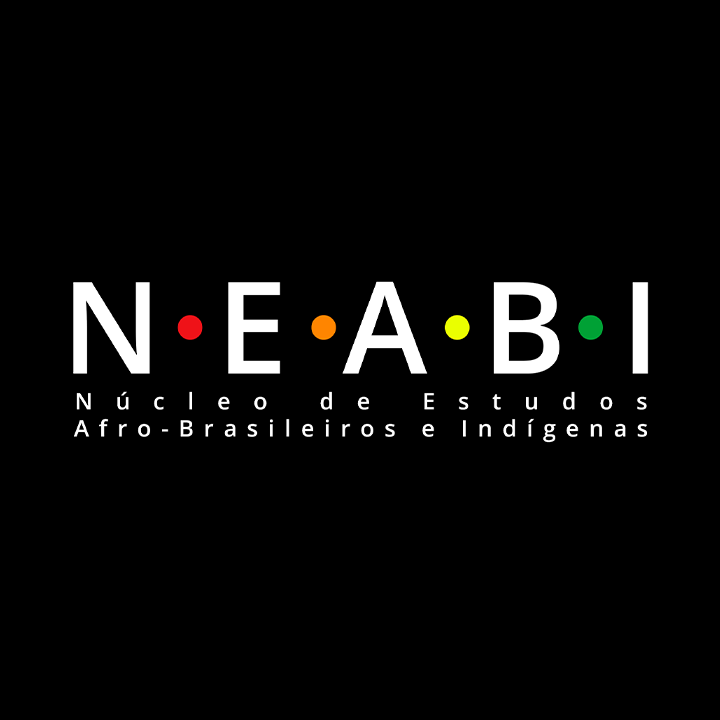
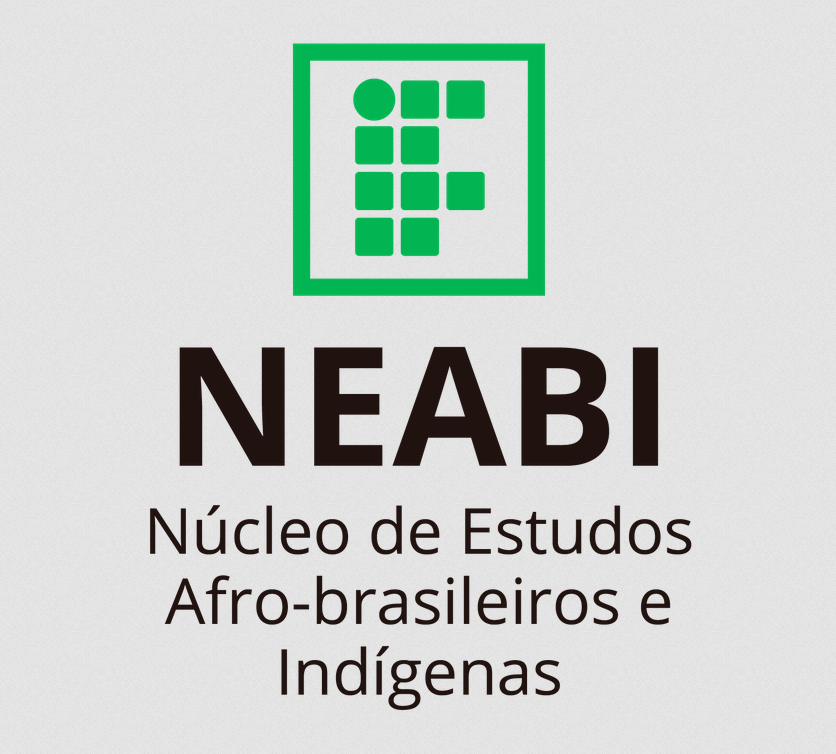
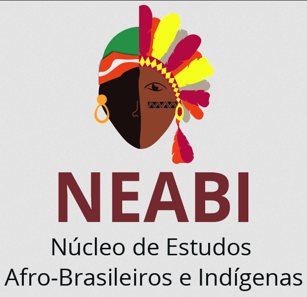

NEABI (Núcleo de Estudos Afro-Brasileiros e Indígenas)
-

-

-

Descrição
Tem como objetivo principal auxiliar, proporcionando um direcionamento de estudos, sobre pesquisas e ações que promovam uma reflexão sobre as questões étnico-raciais. Ele também busca contribuir para a implementação da exigência legal que obriga incluir no currículo escolar a temática “História e Cultura Afro-Brasileira e indigena”.
Objetivos
- Promover ações de valorização das identidades negra e indígenas, impulsionando a cultura da educação para a convivência e aceitação da diversidade;
- Realizar discussões sobre os componentes curriculares dos cursos ofertados pelo IFMS no sentido de concretizar o Plano Nacional de Implementação da Lei 11.645/2008 e auxiliar no processo de inserção dos conteúdos referentes à história e cultura afro-brasileira e dos povos indígenas no currículo escolar, em especial nas áreas de artes, literatura, sociologia, filosofia e história;
- Atuar como núcleo proponente e consultivo para assuntos referentes às políticas afirmativas, em especial à política de reserva de vagas para indígenas e afro-brasileiros nos processos seletivos e concursos públicos oferecidos;
- Estimular o desenvolvimento de ações educativas que divulguem a influência e a importância da cultura negra e indígena na formação do povo brasileiro e suas repercussões no âmbito do país, do estado, da região e do município;
- Promover a realização de atividades de extensão, como cursos, seminários, palestras, conferências, painéis, simpósios, oficinas e exposições de trabalhos, com participação da comunidade interna e externa, referentes às temáticas de que tratam o presente regulamento;
- Estimular o desenvolvimento de estudos e pesquisas nos campi com abordagens multi, trans e interdisciplinares ligadas aos temas étnico-raciais, bem como pleitear a publicação dos resultados relacionados à questão do negro e indígena em veículos de comunicação internos e externos;
- Estimular ações de integração de estudantes do IFMS e de escolas das redes pública e privada em comunidades negras rurais, quilombolas, comunidades e aldeias indígenas urbanas e em terras indígenas, com o intuito de realização de atividades voltadas para as questões étnico-raciais envolvendo negros e indígenas;
- Organizar encontros de reflexão e capacitação de servidores em educação para o conhecimento e a valorização da história dos povos africanos, da cultura afro-brasileira e indígena e da diversidade na construção histórica e cultural do país;
- Implementar ações direcionadas a uma educação pluricultural dos estudantes, para a construção da cidadania por meio da valorização da identidade étnico-racial, principalmente de negros e indígenas;
- Propor ações de levantamento do perfil da comunidade interna e externa quanto aos aspectos étnico-raciais;
- Assessorar os servidores na identificação de temáticas étnico-raciais, visando a implementar metodologias de ensino/aprendizagem relacionadas com a temática e viabilizar atividades pedagógicas para o desenvolvimento de ações relacionadas aos negros e indígenas;
- Estimular estratégias de divulgação do conjunto de ações do Núcleo de Estudos Afro-Brasileiros e Indígenas do IFMS (Neabi).
Link para o site do Neabi do IFMS: https://www.ifms.edu.br/nucleo-de-estudos-neabi